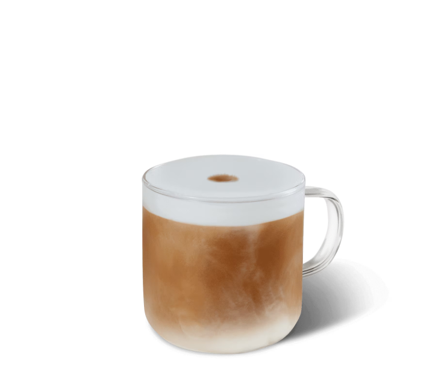

Caffé Mocha
Um pouco de chantilly e uma pitada de raspas de chocolate são os elementos deste clássico Starbucks® rico em chocolate.



Um pouco de chantilly e uma pitada de raspas de chocolate são os elementos deste clássico Starbucks® rico em chocolate.